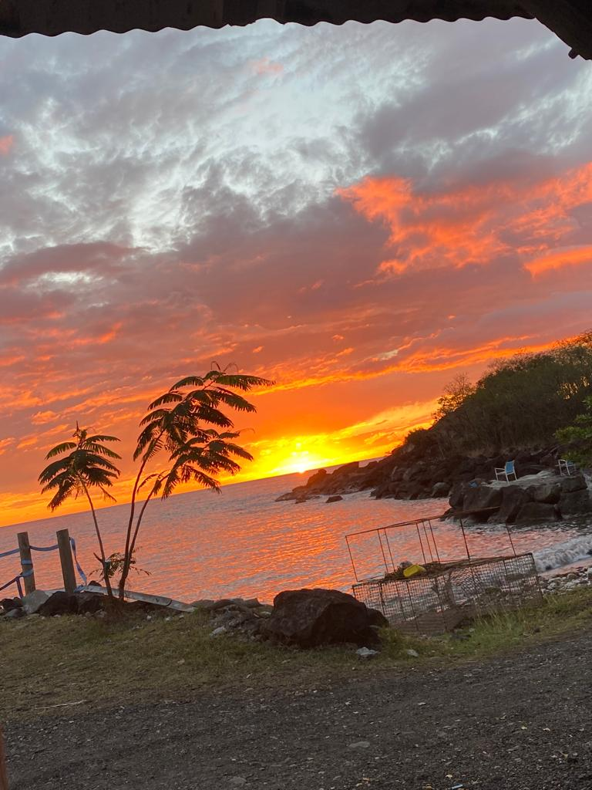
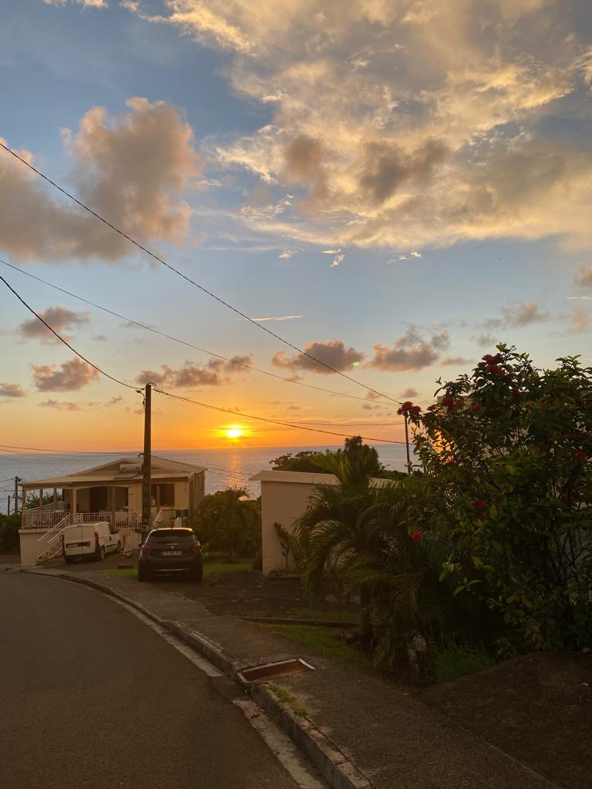

Activités à faire
Activités Nautiques

Activités en plein air

Excurson en mer

Autres
Bienvenue dans l'archipel de Guadeloupe !
La Guadeloupe forme une archipel de 1780 km² comprenant huit îles dont la Grande-Terre (à l'est) et la Basse-Terre (à l'ouest), lesquelles sont les deux principales îles séparées par un étroit canal la rivière Salée, mais reliées par un pont
Territoire français d'outre-mer, la Guadeloupe est particulièrement connue pour ses beaux paysages croisés entre mers et montagnes, ses rivières et sa particulière ressemblance à un papillon. Pourtant, d'un point de vue culturel, l'île aux belles eaux est bien plus que celà.
En effet si musées et théâtres ne sont pas particulièerement épris des habitants de ces térritoires ultramararins, l'histoire de l'île , les diverses pratiques culturelles et traditionnelles de celle-ci sont une véritable richesse que ses résidents ainsi que le monde entier se doivent connaître.
Activités Nautiques
Activités en plein air
Excurson en mer
Autres
Un parcours acrobatique en hauteur, également appelé parcours d'aventure en forêt ou simplement parcours aventure, situé dans les mamelles.
En famille ou entre amis, prenez place à bord d'une bouée Air Stream, d'un canapé ou du flyfish et venez découvrir le plaisir de la glisse tracté par un bateau piloté par nos moniteurs, vous pouvez trouver cette activté sur certaines plage tel que la plage du souffleur à Port-Louis.
Voici une des activité a absolument faire ne Guadeloupe
En famille ou entre amis, prenez place à bord d'une bouée Air Stream, d'un canapé ou du flyfish et venez découvrir le plaisir de la glisse tracté par un bateau piloté par nos moniteurs, vous pouvez trouver cette activté sur certaines plage tel que la plage du souffleur à Port-Louis.
Voici une des activité a absolument faire ne Guadeloupe
Voici une des activité a absolument faire ne Guadeloupe

Voici une des activité a absolument faire ne Guadeloupe
Voici une des activité a absolument faire ne Guadeloupe